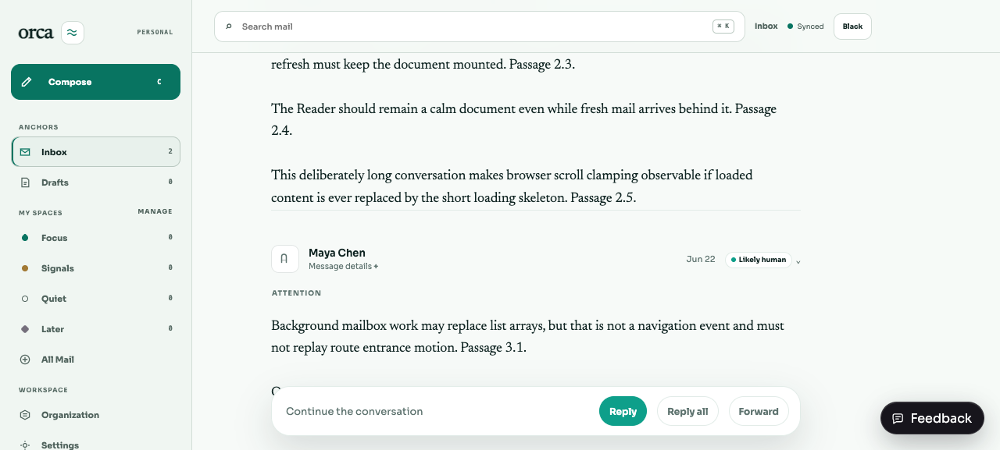
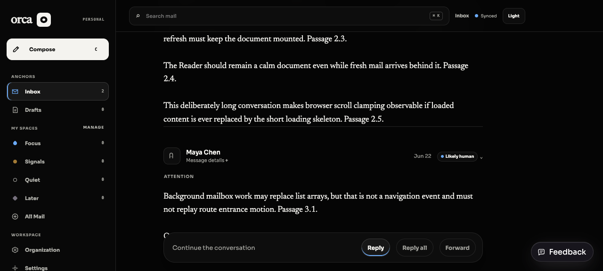
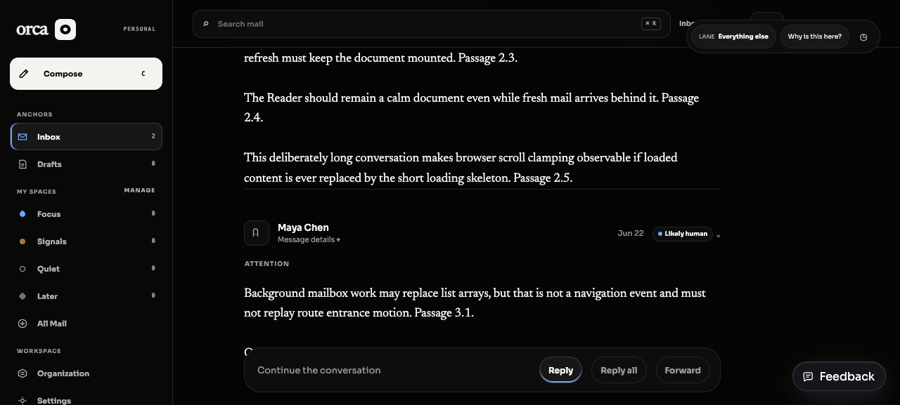

The Reader stays put while mail refreshes.
A deterministic production-mode mailbox delayed provider sync by 5.5 seconds. After the long Reader settled, the harness armed its observers, captured the provider refresh generation, scrolled the real .desktop-workspace to 1100px, and waited for that generation to advance.
| Mode | Observed | Provider refresh | Unrelated inbox value | Detail reads | Scroll | Loaded node | Delayed animation |
|---|---|---|---|---|---|---|---|
| Light · full motion | 6388 ms | 0 → 1 | Refreshed | 2 → 2 | 1100 → 1100 | Same | 0 |
| Orca Black · full motion | 6486 ms | 1 → 2 | Refreshed | 2 → 2 | 1100 → 1100 | Same | 0 |
| Orca Black · reduced | 6044 ms | 2 → 3 | Refreshed | 2 → 2 | 1100 → 1100 | Same | 0 · animation none |
Each run installs removal, loading, and animation observers before recording its refresh-generation baseline. It then polls until the generation increments and asserts the unrelated mailbox row reads “Unrelated mailbox row — refreshed.” The two detail reads occur while the initial deep link and cached inbox settle; the measured provider refresh adds none. Deferred regression coverage separately proves a mailbox change cannot race the primary detail request, and a failed silent refresh retries on a later same-version mailbox refresh.
Captured after the delayed refresh
Each frame is at the same 1100px Reader position, after more than six seconds in the mode named below.



none